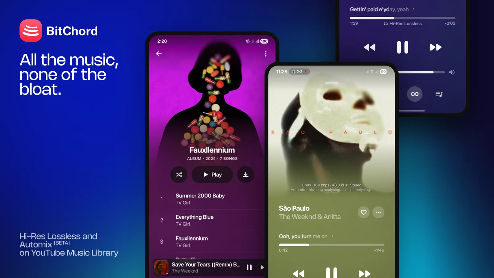

Hi-res audio
Lossless FLAC and ALAC from a configured source, with YouTube Music as the fallback.
Windows · Android · TV · Wear OS
BitChord is an aesthetic YouTube Music client with hi-res playback, word-synced lyrics, DJ-style automix and a desktop app that feels native on Windows.
Free · GPL-3.0 · No account required to start

Built on the same player engine as the Android app, wrapped in a native desktop shell.
Lossless FLAC and ALAC from a configured source, with YouTube Music as the fallback.
Word and syllable-level highlighting from a dozen providers, with an Apple-Music-style animation.
Gapless playback, 0–12s crossfade, and DJ-style beat-matched transitions.
Mica and Acrylic materials, media keys, the volume-flyout media card and a system tray.
Download tracks with embedded metadata, and bring in your own local library.
Equalizer, sleep timer, playback speed, skip silence, scrobbling and Discord presence.
The Windows build ships with its own Java runtime, codecs and models — nothing else to install.
Windows 10/11 · x64
Installer (.exe) MSI package Portable (.zip)Android 8+ · phone and tablet
Download APK Android TVx86_64 · any modern distro
AppImage Debian / Ubuntu (.deb) Fedora (.rpm)The Windows installer is unsigned, so SmartScreen may warn on first run. Choose “More info → Run anyway”, or use the portable build.
Yes. It is open source under the GPL-3.0 licence, and there is no account, subscription or in-app purchase.
Downloaded tracks and your local music library play offline. Search and browsing need a connection.
The build is not code-signed yet, so some scanners flag new or low-reputation executables. The source is public and every release is built from it.
No. BitChord is not affiliated with, endorsed by, or connected to YouTube or Google. Use it at your own discretion.